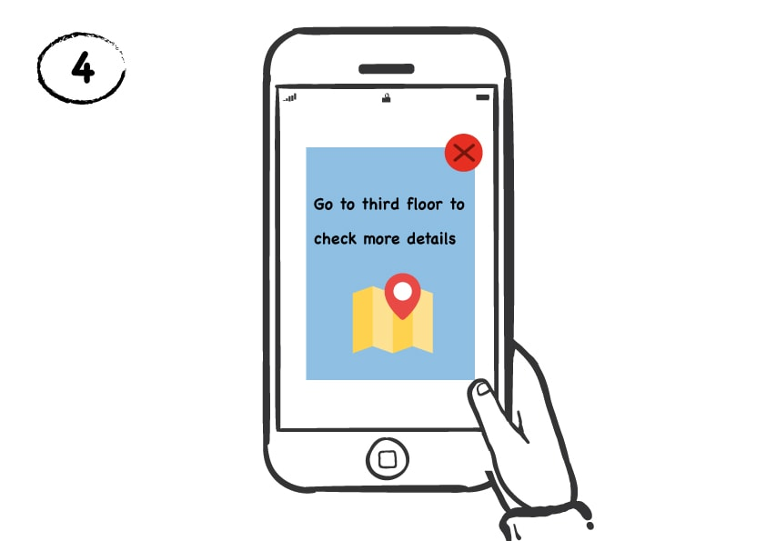
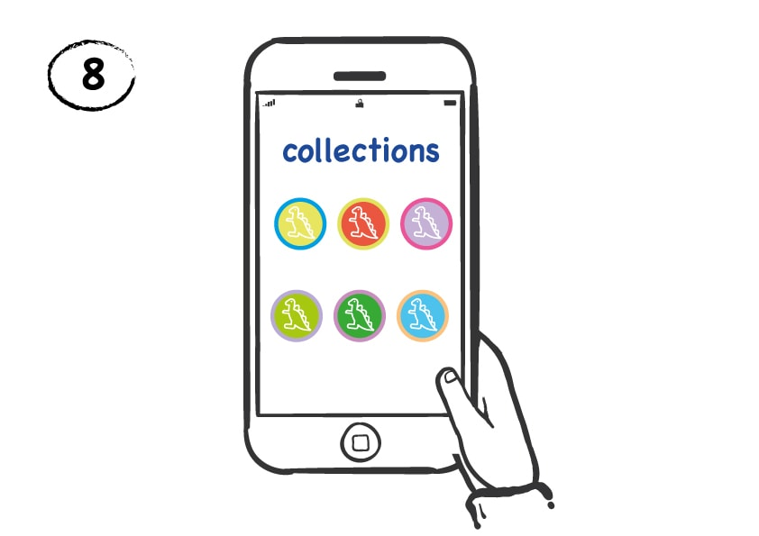

Interactive Application Design for Museum
As technology is changing rapidly, it has become difficult for the kids of next generation to engage with the museums. In this project, we explore how we can ensure that technology acts as an enhancer of experience rather than a mere distraction. This project was part of class Software Design for Learning at School of Information. We incorporated various learning theories to engage kids like Social Constructivism, Behaviorism and Scaffolding. Our process involved defining learning goals, brainstorming, personas, storyboarding and wireframes.
I led the user experience and interaction design of the application — the place where kids can select their avatar and play games — as well as playing a leading role in the design of the application.
Learning Goals
The primary goal of our application was to ensure that our target learner audience absorbs as much knowledge, offered by the museum, as possible through the use of our application.The two major types of learning that we imbued within our application are incidental and deliberate learning. Because our target learner audience is young, we concluded that the least intrusive learning method would serve our purpose best; based on a behavioristic theory of learning, unintrusive teaching method paired with appropriate extrinsic motivations will prove to be highly successful in engaging our target learner audience.
Target Audience
In our design process, we focussed on children within the grades 3rd to 6th as our primary learner audience. We have found that children generally within this grade group are exposed to a field trip to different types museums throughout their school years. We understood that there are other grade level students that do attend field trips to museums; however, because the term “children” is often a loosely used term to describe a very wide set of audience, we decided to focus on a tighter group to best fit “children” from the middle.
Assumptions
We assumed that children who attend the museums are with their classmates and chaperones, on a field trip. In addition, we assumed that these children have previous knowledge on how to use a smartphone with internet access. We didn’t think an extensive knowledge on smartphone usage would be necessary as of now; however, once we develop mini-games and features for our mobile application, we may need more device-specific features to be accessed. Lastly on the students, we are assuming that their group of classmates would possess at least a few smartphones to be shared amongst the group.
On conducting quick user research, we found the following observations :
- Real life concepts
"Most of the content in the museum related to real life concepts like posture but they were unable to communicate that information effectively to the kids." - Missing puzzle pieces.
Some of the content in the museum consisted of a “missing puzzle” piece. For example, this piece of information talks about why this piece of fossil was missing for several years. - Visible interactions
"Kids of age 10-12 were just reading and pointing to the images. This behavior served as baseline for the interaction design in the later stages." - Scaffolding
"We did a general observation in the museum of few families with kids. Parents were involved in guiding them or telling an information about the artifact"
Personas
After visiting the museum several times, we came up with personas for the kids in the museum.
User Scenarios
We used principles of shallow interaction design to facilitate our primary interaction between the mobile application and the user (kid). By following a basic “Tap-View-Close” model for interaction, we were able to design our user flow. This helped us redirect the attention of kid towards museum object rather than getting lost in the application itself.
When the kid reached near the museum artifact, a simple notification would appear in the mobile application containing an instruction for the kid (for instance, to observe the eyes of the dinosaur).
Gradually, other instructions would also appear as the kid completes each task or prompt. By engaging the kid with micro-interactions like this, we hope to enhance the learning experience of the kid in the museum.
User scenarios are shown as follows:
- 

- 
Information Architecture
After we came up with our storyboarding scenario, we tried to incoporate user needs in the user scenarios to come up with a flow diagram.
Final Design
Based on the flow, we came up with our final design. We had divided our application into two moded - indvidual mode(which was our main focus) and teamwork mode.
Reflection
On retrospect, I would see this project as a experiment towards new kind of design methodology which focusses on Human-Computer-Object interaction where the computer merely acts as an facilitator of the experience rather than the distractor. There was a significant discussion regarding whether we should include team-work mode or not, or which mode should we focus on. Design decisions were taken keeping into account three main aspects - Choice of Control, Connected Learning, Social mediation. Micro-interactions involving student to look and observe at the museum object were also conscious design choices keeping into account the principles of Shallow interaction design. Due to time constraints we were not able to test this product with the users, however, I believe this design resonates with principles of Learner centered design.
Some other projects
- Design Strategy at Chalopadho
Developed Content Strategy for the product to increase the engagement by 50% in teacher analytics. - Design Interfaces for Autism
Designing interfaces for children in Tammana Autism Center. - Customer Experience Design
Improved visitor experience at UMMA by contextual inquiry and affinity analysis. Recommended solutions to the client in the end related to navigation in museum.